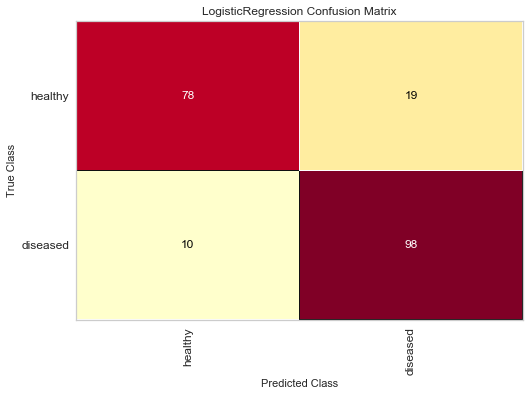
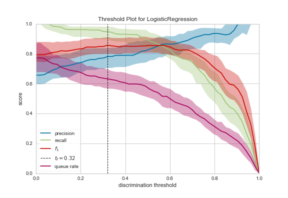
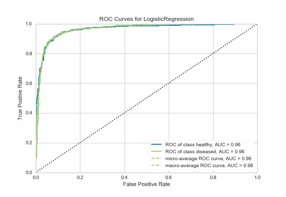
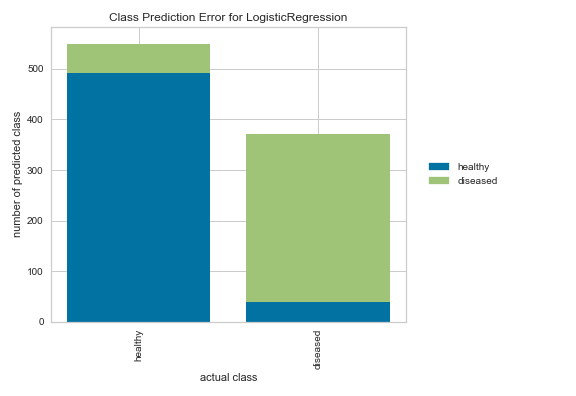

Confusion Matrix: This confusion matrix shows sensitivity and specificity of classification among our 205 patients in the test data sample.
The Logistic Regression model correctly classified 78 true positive cases of HD, and 98 negative cases.
However, the model incorrectly classified 10 patients with HD as healthy, and 19 healthy patients with HD.

Discrimination Threshold: This figure shows the probability (score) at which the positive class is chose over the negative class for binary (yes/no heart disease) classification.
- Precision: An increase in precision is a reduction in the number of false positives
- Recall: An increase in recall decrease the likelihood that the positive class is missed
- F1 Score: The F1 score is the harmonic mean between precision and recall
- Queue Rate: The “queue” refers to positive predicted cases

ROC Curve: Receiver Operating Characteristic (or Area Under the Curve) visualizes the tradeoff between the sensitivity (true positive Y-axis) and specificity (false positive X-axis)
Optimal model specification is at the top-left, indicating 100% predictive power.
Therefore a larger area under the curve generally indicates better model predictive performance.

Class Prediction Error: Similar to the confusion matrix, this figure shows the proportion of true and false positive or negative classificaitons.